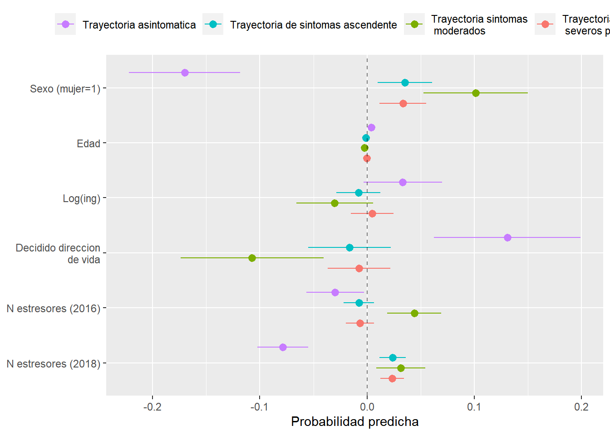

Capítulo 3 Variables modelo
Agregar variables de trayectoria de los distintos modelos
elsoc_salud_modelo <- elsoc_saludelsoc_salud_modelo$trayectoria_om4.4 <- factor(stats::cutree(ward.depr4, k = 5),
levels = c(4, 2, 3, 1),
labels = c('Trayectoria baja-media',
'Trayectoria media-moderada',
'Trayectoria ascendente',
'Trayectoria alta-moderada'))
elsoc_salud_modelo$trayectoria_om4.5 <- factor(stats::cutree(ward.depr4, k = 5),
levels = c(5, 4, 2, 3, 1),
labels = c('Trayectoria baja-media',
'Trayectoria media-moderada',
'Trayectoria descendente',
'Trayectoria ascendente',
'Trayectoria alta-moderada'))
elsoc_salud_modelo$trayectoria_gmm.4lin <- factor(elsoc_salud %>%
left_join(lcmm4_lin$pprob %>% select(idencuesta, class),
by = 'idencuesta') %>%
pull(class),
levels = c(4, 3, 1, 2),
labels = c('Trayectoria baja', 'Trayectoria media',
'Trayectoria descendente', 'Trayectoria ascendente'))
elsoc_salud_modelo$trayectoria_gmm.5lin <- factor(elsoc_salud %>%
left_join(lcmm5_lin$pprob %>% select(idencuesta, class),
by = 'idencuesta') %>%
pull(class),
levels = c(1, 4, 5, 2, 3),
labels = c('Trayectoria baja', 'Trayectoria media',
'Trayectoria media-descendente', 'Trayectoria media-ascendente',
'Trayectoria alta-descendente'))Agregar variables independientes
elsoc_salud_modelo <- elsoc_salud_modelo %>%
filter(!elsoc::is_nsnr(m30_w01, m30_w02, m30_w03, m30_w04, m30b_w05)) %>%
mutate(
# Variables de ingreso:
m30_w01 = 1000*as.numeric(car::recode(m30_w01, "1 = 220; 2 = 250; 3 = 305; 4 = 355; 5 = 400; 6 = 445; 7 = 490;
8 = 535; 9 = 585; 10 = 640; 11 = 700; 12 = 765; 13 = 845; 14 = 935;
15 = 1040; 16 = 1180; 17 = 1375; 18 = 1670; 19 = 2275; 20 = 2700; NA = NA")),
m29_w01_imp = ifelse(is_nsnr(m29_w01), m30_w01, m29_w01),
ypc_w01 = m29_w01_imp / nhogar1_w01,
m30_w02 = 1000*as.numeric(car::recode(m30_w02, "1 = 220; 2 = 250; 3 = 305; 4 = 355; 5 = 400; 6 = 445; 7 = 490;
8 = 535; 9 = 585; 10 = 640; 11 = 700; 12 = 765; 13 = 845; 14 = 935;
15 = 1040; 16 = 1180; 17 = 1375; 18 = 1670; 19 = 2275; 20 = 2700; NA = NA")),
m29_w02_imp = ifelse(is_nsnr(m29_w02), m30_w02, m29_w02),
ypc_w02 = m29_w02_imp / nhogar1_w01,
m30_w03 = 1000*as.numeric(car::recode(m30_w03, "1 = 220; 2 = 250; 3 = 305; 4 = 355; 5 = 400; 6 = 445; 7 = 490;
8 = 535; 9 = 585; 10 = 640; 11 = 700; 12 = 765; 13 = 845; 14 = 935;
15 = 1040; 16 = 1180; 17 = 1375; 18 = 1670; 19 = 2275; 20 = 2700; NA = NA")),
m29_w03_imp = ifelse(is_nsnr(m29_w03), m30_w03, m29_w03),
ypc_w03 = m29_w03_imp / ifelse(is_nsnr(m54_w03), NA, m54_w03),
m30_w04 = 1000*as.numeric(car::recode(m30_w04, "1 = 220; 2 = 250; 3 = 305; 4 = 355; 5 = 400; 6 = 445; 7 = 490;
8 = 535; 9 = 585; 10 = 640; 11 = 700; 12 = 765; 13 = 845; 14 = 935;
15 = 1040; 16 = 1180; 17 = 1375; 18 = 1670; 19 = 2275; 20 = 2700; NA = NA")),
m29_w04_imp = ifelse(is_nsnr(m29_w04), m30_w04, m29_w04),
ypc_w04 = m29_w04_imp / ifelse(is_nsnr(m54_w04), NA, m54_w04),
m30b_w05 = 1000*as.numeric(car::recode(m30b_w05, "1 = 225; 2 = 575; 3 = 850; 4 = 1250; 5 = 1750; NA = NA")),
m29_w05_imp = ifelse(is_nsnr(m29_w05), m30b_w05, m29_w05),
ypc_w05 = m29_w05_imp / ifelse(is_nsnr(m54_w05), NA, m54_w05),
log_ing = log((ypc_w01 + ypc_w02 + ypc_w03 + ypc_w04 + ypc_w05)/5),
quintil_w01 = statar::xtile(ypc_w01, n = 5, wt = ponderador02_w01),
quintil_w01 = factor(quintil_w01,
levels = 1:5,
labels = glue::glue('Quintil {1:5}')),
quintil_w02 = statar::xtile(ypc_w02, n = 5, wt = ponderador02_w02),
quintil_w02 = factor(quintil_w02,
levels = 1:5,
labels = glue::glue('Quintil {1:5}')),
quintil_w03 = statar::xtile(ypc_w03, n = 5, wt = ponderador02_w03),
quintil_w03 = factor(quintil_w03,
levels = 1:5,
labels = glue::glue('Quintil {1:5}')),
quintil_w04 = statar::xtile(ypc_w04, n = 5, wt = ponderador02_w04),
quintil_w04 = factor(quintil_w04,
levels = 1:5,
labels = glue::glue('Quintil {1:5}')),
quintil_w05 = statar::xtile(ypc_w05, n = 5, wt = ponderador02_w05),
quintil_w05 = factor(quintil_w05,
levels = 1:5,
labels = glue::glue('Quintil {1:5}')),
# Situación ocupacional:
ocup_w01 = factor(car::recode(m02_w01, "1:3 = 1; 6 = 2; c(4, 5, 7, 8, 9) = 3"),
levels = 1:3,
labels = c('Ocupado', 'Desempleado', 'Inactivo')),
ocup_w02 = factor(car::recode(m02_w02, "1:3 = 1; 6 = 2; c(4, 5, 7, 8, 9) = 3"),
levels = 1:3,
labels = c('Ocupado', 'Desempleado', 'Inactivo')),
ocup_w03 = factor(car::recode(m02_w03, "1:3 = 1; 6 = 2; c(4, 5, 7, 8, 9) = 3"),
levels = 1:3,
labels = c('Ocupado', 'Desempleado', 'Inactivo')),
ocup_w04 = factor(car::recode(m02_w04, "1:3 = 1; 6 = 2; c(4, 5, 7, 8, 9) = 3"),
levels = 1:3,
labels = c('Ocupado', 'Desempleado', 'Inactivo')),
ocup_w05 = factor(car::recode(m02_w05, "1:3 = 1; 6 = 2; c(4, 5, 7, 8, 9) = 3"),
levels = 1:3,
labels = c('Ocupado', 'Desempleado', 'Inactivo')),
ocup2_w01 = factor(car::recode(m02_w01, "1:3 = 1; 6 = 2; c(4, 5, 8, 9) = 3; 7 = 4"),
levels = 1:4,
labels = c('Ocupado', 'Desempleado', 'Inactivo', 'Trabajo no remunerado')),
ocup2_w02 = factor(car::recode(m02_w02, "1:3 = 1; 6 = 2; c(4, 5, 8, 9) = 3; 7 = 4"),
levels = 1:4,
labels = c('Ocupado', 'Desempleado', 'Inactivo', 'Trabajo no remunerado')),
ocup2_w03 = factor(car::recode(m02_w03, "1:3 = 1; 6 = 2; c(4, 5, 8, 9) = 3; 7 = 4"),
levels = 1:4,
labels = c('Ocupado', 'Desempleado', 'Inactivo', 'Trabajo no remunerado')),
ocup2_w04 = factor(car::recode(m02_w04, "1:3 = 1; 6 = 2; c(4, 5, 8, 9) = 3; 7 = 4"),
levels = 1:4,
labels = c('Ocupado', 'Desempleado', 'Inactivo', 'Trabajo no remunerado')),
ocup2_w05 = factor(car::recode(m02_w05, "1:3 = 1; 6 = 2; c(4, 5, 8, 9) = 3; 7 = 4"),
levels = 1:4,
labels = c('Ocupado', 'Desempleado', 'Inactivo', 'Trabajo no remunerado')),
# Insatisfacción con el ingreso
insatisf_ing_w01 = factor(m16_w01 %in% 1:2,
labels = c('Satisfecho', 'Insatisfecho')),
insatisf_ing_w02 = factor(m16_w02 %in% 1:2,
labels = c('Satisfecho', 'Insatisfecho')),
insatisf_ing_w03 = factor(m16_w03 %in% 1:2,
labels = c('Satisfecho', 'Insatisfecho')),
insatisf_ing_w04 = factor(m16_w04 %in% 1:2,
labels = c('Satisfecho', 'Insatisfecho')),
insatisf_ing_w05 = factor(m16_w05 %in% 1:2,
labels = c('Satisfecho', 'Insatisfecho')),
# Sobrecarga de deudas
sobrecarga_deuda_w01 = factor(m43_w01 %in% 4:5,
labels = c('No sobrecargado por deudas', 'Sobrecargado por deudas')),
sobrecarga_deuda_w03 = factor(m43_w03 %in% 4:5,
labels = c('No sobrecargado por deudas', 'Sobrecargado por deudas')),
sobrecarga_deuda_w05 = factor(m43_w05 %in% 4:5,
labels = c('No sobrecargado por deudas', 'Sobrecargado por deudas')),
# Apoyo social
apoyo_social_w01 = factor(s12_w01 %in% 4:5,
labels = c('Sin apoyo social', 'Con apoyo social')),
apoyo_social_w03 = factor(s12_w03 %in% 4:5,
labels = c('Sin apoyo social', 'Con apoyo social')),
apoyo_social_w05 = factor(s12_w05 %in% 4:5,
labels = c('Sin apoyo social', 'Con apoyo social')),
# Actividad física regular
activ_fisica_w01 = factor(s04_w01 %in% 1:3,
labels = c('Sin actividad física regular', 'Con actividad física regular')),
activ_fisica_w03 = factor(s04_w03 %in% 1:3,
labels = c('Sin actividad física regular', 'Con actividad física regular')),
activ_fisica_w05 = factor(s04_w05 %in% 1:3,
labels = c('Sin actividad física regular', 'Con actividad física regular')),
# Fumador
fuma_w01 = factor(s08_w01 >= 1,
labels = c('No fuma', 'Fumador')),
fuma_w03 = factor(s08_w03 >= 1,
labels = c('No fuma', 'Fumador')),
fuma_w05 = factor(s08_w05 >= 1,
labels = c('No fuma', 'Fumador')),
# IMC
imc_w01 = ifelse(is_nsnr(s06_w01), NA, s06_w01) / (ifelse(is_nsnr(s05_w01), NA, s05_w01/100))^2,
imc_w03 = ifelse(is_nsnr(s06_w03), NA, s06_w03) / (ifelse(is_nsnr(s05_w03), NA, s05_w03/100))^2,
imc_w05 = ifelse(is_nsnr(s06_w05), NA, s06_w05) / (ifelse(is_nsnr(s05_w03), NA, s05_w03/100))^2,
# Personalidad
s22_01_w02 = ifelse(is_nsnr(s22_01_w02), NA, s22_01_w02),
s22_02_w02 = ifelse(is_nsnr(s22_02_w02), NA, s22_02_w02),
s22_03_w02 = ifelse(is_nsnr(s22_03_w02), NA, s22_03_w02),
s22_04_w02 = ifelse(is_nsnr(s22_04_w02), NA, s22_04_w02),
s22_05_w02 = ifelse(is_nsnr(s22_05_w02), NA, s22_05_w02),
s22_06_w02 = ifelse(is_nsnr(s22_06_w02), NA, s22_06_w02),
s22_07_w02 = ifelse(is_nsnr(s22_07_w02), NA, s22_07_w02),
s22_08_w02 = ifelse(is_nsnr(s22_08_w02), NA, s22_08_w02),
s22_09_w02 = ifelse(is_nsnr(s22_09_w02), NA, s22_09_w02),
s22_10_w02 = ifelse(is_nsnr(s22_10_w02), NA, s22_10_w02),
extraversion = 6 - (s22_01_w02) + s22_06_w02 ,
agreeableness = s22_02_w02 + 6 - s22_07_w02,
conscientiousness = 6 - s22_03_w02 + s22_08_w02 ,
neuroticism = 6 - s22_04_w02 + s22_09_w02,
openness = 6 - s22_05_w02 + s22_10_w02,
# Direccion vida
proyecto_vida = factor(s30_01_w03 %in% 4:5,
labels = c('No decidido dirección de vida', 'Decidido dirección de vida'))
)3.1 Crear y agregar trayectorias de variables independientes
comparar_clusters <- function(.data, vars, K = 10) {
seq <- TraMineR::seqdef(.data,
var = vars,
weights = .data$ponderador02_w01)
dist <- TraMineR::seqdist(seq,
method = "LCS",
with.missing = TRUE)
ward <- cluster::agnes(dist, diss = TRUE, method = 'ward')
# Comparar soluciones con diferentes numeros de trayectorias (se prueban de 2 a 10 clusters)
ward.range <- WeightedCluster::as.clustrange(ward, diss = dist, ncluster = K)
# Visualizar clusters:
ward.range$stats %>%
mutate(clusters = 2:10) %>%
pivot_longer(cols = c(ASWw, HG, PBC, HC),
names_to = 'indicador',
values_to = 'value') %>%
group_by(indicador) %>%
mutate(value = (value - mean(value, na.rm = TRUE)) / sd(value, na.rm = TRUE)) %>%
ggplot(aes(y = value, x = clusters, color = indicador, group = indicador)) +
geom_line() +
scale_x_continuous(breaks = 2:10)
}trayectoria <- function(.data, vars, K, olas = c(2016:2019, 2021), ...) {
seq <- TraMineR::seqdef(.data,
var = vars,
...,
weights = .data$ponderador02_w01)
dist <- TraMineR::seqdist(seq,
method = "LCS",
with.missing = TRUE)
ward <- cluster::agnes(dist, diss = TRUE, method = 'ward')
TraMineR::seqIplot(seq, group = stats::cutree(ward, k = K),
border = NA,
space = 0, idxs = 0, xtlab = olas)
TraMineR::seqdplot(seq, group = stats::cutree(ward, k = K),
border = NA,
space = 0)
}Insatisfacción con el ingreso
comparar_clusters(elsoc_salud_modelo,
vars = c('insatisf_ing_w01', 'insatisf_ing_w02', 'insatisf_ing_w03', 'insatisf_ing_w04', 'insatisf_ing_w05'))
trayectoria(elsoc_salud_modelo,
vars = c('insatisf_ing_w01', 'insatisf_ing_w02', 'insatisf_ing_w03', 'insatisf_ing_w04', 'insatisf_ing_w05'),
cpal = c('palevioletred3', 'palegreen3'),
K = 3)
trayectoria(elsoc_salud_modelo,
vars = c('insatisf_ing_w01', 'insatisf_ing_w02', 'insatisf_ing_w03', 'insatisf_ing_w04', 'insatisf_ing_w05'),
cpal = c('palevioletred3', 'palegreen3'),
K = 4)

# Agregar trayectoria de 4 clusters
seq <- TraMineR::seqdef(elsoc_salud_modelo,
var = c('insatisf_ing_w01', 'insatisf_ing_w02', 'insatisf_ing_w03', 'insatisf_ing_w04'),
weights = elsoc_salud_modelo$ponderador02_w01)
dist <- TraMineR::seqdist(seq,
method = "LCS",
with.missing = TRUE)
ward <- cluster::agnes(dist, diss = TRUE, method = 'ward')
elsoc_salud_modelo$trayectoria_insatisf_ing <- factor(stats::cutree(ward, k = 4))Situación ocupacional (3 categorías)
comparar_clusters(elsoc_salud_modelo,
vars = c('ocup_w01', 'ocup_w02', 'ocup_w03', 'ocup_w04', 'ocup_w05'))trayectoria(elsoc_salud_modelo,
vars = c('ocup_w01', 'ocup_w02', 'ocup_w03', 'ocup_w04', 'ocup_w05'),
cpal = c('palevioletred3', 'khaki3', 'steelblue3'),
K = 2)
trayectoria(elsoc_salud_modelo,
vars = c('ocup_w01', 'ocup_w02', 'ocup_w03', 'ocup_w04', 'ocup_w05'),
cpal = c('palevioletred3', 'khaki3', 'steelblue3'),
K = 3)

trayectoria(elsoc_salud_modelo,
vars = c('ocup_w01', 'ocup_w02', 'ocup_w03', 'ocup_w04', 'ocup_w05'),
cpal = c('palevioletred3', 'khaki3', 'steelblue3'),
K = 6)
# Agregar trayectoria de 3 clusters
seq <- TraMineR::seqdef(elsoc_salud_modelo,
var = c('ocup_w01', 'ocup_w02', 'ocup_w03', 'ocup_w04', 'ocup_w05'),
weights = elsoc_salud_modelo$ponderador02_w01)
dist <- TraMineR::seqdist(seq,
method = "LCS",
with.missing = TRUE)
ward <- cluster::agnes(dist, diss = TRUE, method = 'ward')
elsoc_salud_modelo$trayectoria_ocup <- factor(stats::cutree(ward, k = 3))Situación ocupacional (4 categorías)
comparar_clusters(elsoc_salud_modelo,
vars = c('ocup2_w01', 'ocup2_w02', 'ocup2_w03', 'ocup2_w04', 'ocup2_w05'))
trayectoria(elsoc_salud_modelo,
vars = c('ocup2_w01', 'ocup2_w02', 'ocup2_w03', 'ocup2_w04', 'ocup2_w05'),
cpal = c('palevioletred3', 'khaki3', 'steelblue3', 'palegreen3'),
K = 3)trayectoria(elsoc_salud_modelo,
vars = c('ocup2_w01', 'ocup2_w02', 'ocup2_w03', 'ocup2_w04', 'ocup2_w05'),
cpal = c('palevioletred3', 'khaki3', 'steelblue3', 'palegreen3'),
K = 4)
trayectoria(elsoc_salud_modelo,
vars = c('ocup2_w01', 'ocup2_w02', 'ocup2_w03', 'ocup2_w04', 'ocup2_w05'),
cpal = c('palevioletred3', 'khaki3', 'steelblue3', 'palegreen3'),
K = 5)trayectoria(elsoc_salud_modelo,
vars = c('ocup2_w01', 'ocup2_w02', 'ocup2_w03', 'ocup2_w04', 'ocup2_w05'),
cpal = c('palevioletred3', 'khaki3', 'steelblue3', 'palegreen3'),
K = 6)# Agregar trayectoria de 5 clusters
seq <- TraMineR::seqdef(elsoc_salud_modelo,
var = c('ocup2_w01', 'ocup2_w02', 'ocup2_w03', 'ocup2_w04', 'ocup2_w05'),
weights = elsoc_salud_modelo$ponderador02_w01)
dist <- TraMineR::seqdist(seq,
method = "LCS",
with.missing = TRUE)
ward <- cluster::agnes(dist, diss = TRUE, method = 'ward')
elsoc_salud_modelo$trayectoria_ocup2 <- factor(stats::cutree(ward, k = 5))Sobrecarga por deudas
comparar_clusters(elsoc_salud_modelo,
vars = c('sobrecarga_deuda_w01', 'sobrecarga_deuda_w03', 'sobrecarga_deuda_w05'))
trayectoria(elsoc_salud_modelo,
vars = c('sobrecarga_deuda_w01', 'sobrecarga_deuda_w03', 'sobrecarga_deuda_w05'),
olas = c(2016, 2018, 2021),
cpal = c('palegreen3', 'palevioletred3'),
K = 3)
trayectoria(elsoc_salud_modelo,
vars = c('sobrecarga_deuda_w01', 'sobrecarga_deuda_w03', 'sobrecarga_deuda_w05'),
olas = c(2016, 2018, 2021),
cpal = c('palegreen3', 'palevioletred3'),
K = 4)
trayectoria(elsoc_salud_modelo,
vars = c('sobrecarga_deuda_w01', 'sobrecarga_deuda_w03', 'sobrecarga_deuda_w05'),
olas = c(2016, 2018, 2021),
cpal = c('palegreen3', 'palevioletred3'),
K = 5)

# Agregar trayectoria de 3 clusters
seq <- TraMineR::seqdef(elsoc_salud_modelo,
var = c('sobrecarga_deuda_w01', 'sobrecarga_deuda_w03', 'sobrecarga_deuda_w05'),
weights = elsoc_salud_modelo$ponderador02_w01)
dist <- TraMineR::seqdist(seq,
method = "LCS",
with.missing = TRUE)
ward <- cluster::agnes(dist, diss = TRUE, method = 'ward')
elsoc_salud_modelo$trayectoria_deuda <- factor(stats::cutree(ward, k = 3))Avtividad física regular
comparar_clusters(elsoc_salud_modelo,
vars = c('activ_fisica_w01', 'activ_fisica_w03', 'activ_fisica_w05'))
trayectoria(elsoc_salud_modelo,
vars = c('activ_fisica_w01', 'activ_fisica_w03', 'activ_fisica_w05'),
olas = c(2016, 2018, 2021),
cpal = c('palegreen3', 'palevioletred3'),
K = 2)trayectoria(elsoc_salud_modelo,
vars = c('activ_fisica_w01', 'activ_fisica_w03', 'activ_fisica_w05'),
olas = c(2016, 2018, 2021),
cpal = c('palegreen3', 'palevioletred3'),
K = 4)trayectoria(elsoc_salud_modelo,
vars = c('activ_fisica_w01', 'activ_fisica_w03', 'activ_fisica_w05'),
olas = c(2016, 2018, 2021),
cpal = c('palegreen3', 'palevioletred3'),
K = 5)# Agregar trayectoria de 3 clusters
seq <- TraMineR::seqdef(elsoc_salud_modelo,
var = c('activ_fisica_w01', 'activ_fisica_w03', 'activ_fisica_w05'),
weights = elsoc_salud_modelo$ponderador02_w01)
dist <- TraMineR::seqdist(seq,
method = "LCS",
with.missing = TRUE)
ward <- cluster::agnes(dist, diss = TRUE, method = 'ward')
elsoc_salud_modelo$trayectoria_activ_fisica <- factor(stats::cutree(ward, k = 4))3.2 Guardar datos para usar después
save(elsoc_salud_modelo, file = 'datos_salud_modelo.RData')
sjlabelled::write_stata(x = elsoc_salud_modelo %>%
rename(trayectoria_om4_4 = trayectoria_om4.4,
trayectoria_om4_5 = trayectoria_om4.5,
trayectoria_gmm_4lin = trayectoria_gmm.4lin,
trayectoria_gmm_5lin = trayectoria_gmm.5lin
),
path = 'datos_salud_modelo.dta')